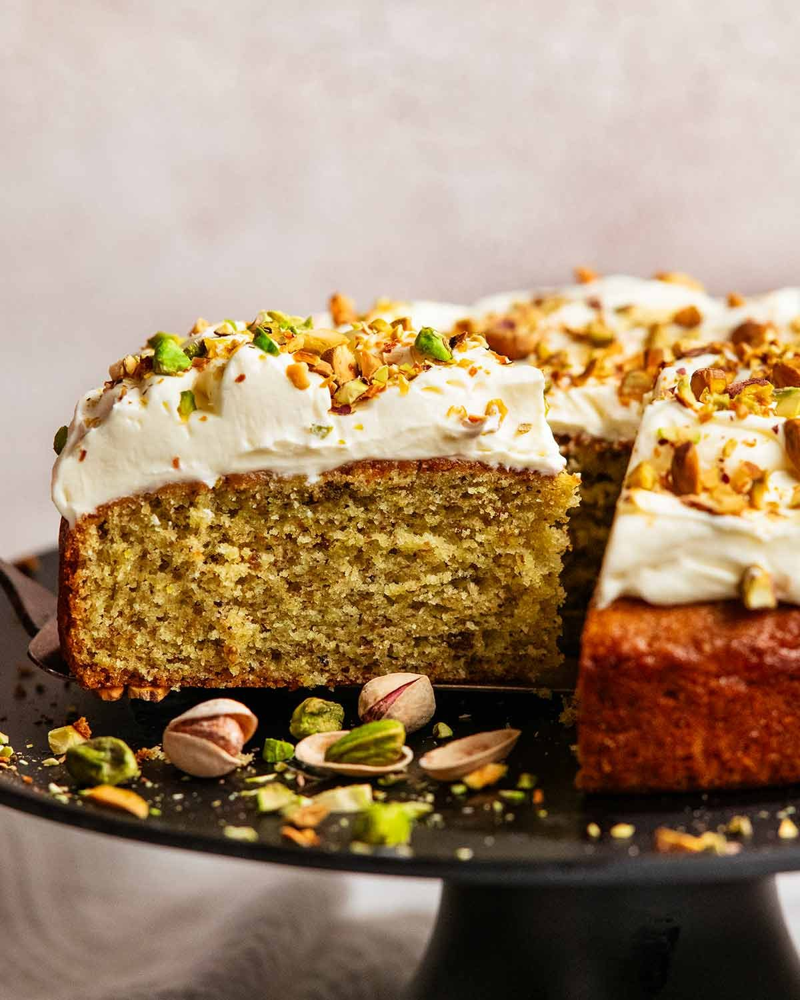

Pistachio Cake Recipe - RecipeTin Eats

There’s something about pistachios that make them a bit fancier than other nuts, don’t you think? So this Pistachio Cake
is special, worthy of serving at any occasion! Topped with a cloud of Cream Cheese Whip. Think – subtly tangy whipped
cream. Dreamy!
Ingredients for the Cake Batter
- Flour
- Baking Powder
- Yoghurt
- Eggs
- Butter AND Oil
- Sugar
- Green Colouring
Ingredients for the Cream Cheese Whip
- Sugar
- Cream Cheese
- Cream
- Vanilla
- Lemon
How to Make Pistachio Cake
- Make Pistachio Powder
- Toast the pistachios in the oven for 12 minutes or until they smell nutty
and they are crisp (eat to check).
- Blitz - Let them cool completely then blitz into a powder. It's very quick
using a NutriBullet as I do - literally 2 x 2 second pulses. Some pistachios
lumps are okay/welcome, but you want it to be at least 95% powder.
⚠️ Be careful not to let the pistachios turn into a paste which will happen
if you blitz for too long.
- Make the Pistachio Cake
- Break Up Pistachio Clumps - Whisk the pistachio powder with the flour.
Then use your fingers to break up any obvious pistachio powder clumps
into a powder i.e. where pistachio powder has gotten a bit pasty so they
stick together. Adding flour makes this step easier because if you pinch
the plain pistachio powder, it sticks together into a paste. Some small
clumps remaining are fine, they will dissolve in the oven.
The whisk in remaining dry ingredients (baking powder, baking soda, salt).
- Whisk Wet - Pull all the wet ingredients into a separate medium bowl.
Then whisk until combined.
- Combine Wet and Dry - Pour the wet inredients into the dry ingredients.
Use a rubber spatula to mix them together but stop when the flour is just
about mixed in. (Why? Because overmixed batter = tough cake, and we
still have extra mixing to come when we add the food colouring.)
- Make It Pistachio Green! Add 4 small drops of green food colouring and
mix it in. Goal - pistachio green colour. (Note: the cake becomes slightly
darker in colour once baked, see above for raw batter vs cooked cake
comparison.) Then mix until the batter is fully combined. You may have
some small lumps from pistachio powder clumps (these will dissolve in
the oven) and a few random whole bits of pistachio.
⚠️ If using gel rather than liquid colouring which is much more intense,
use a tiny toothpick smear instead. See recipe card notes for directions.
💡 We add the food colouring in this step because bizarrely, I found the
colouring doesn't work as well if mixed in with the wet ingredients, I
needed double the amount of colouring. I can't explain it, I just know
what I experienced!
- Pour the batter into a lined pan then spread it out in the pan. You don't
need to smooth the surface perfectly because the batter will spread in the oven.
💡 Tip: Because it's a thickish batter, I prefer to grease the pan with butter
rather than oil spray. This is because butter makes the paper stick more
firmly to the pan so it won't slide as you spread the batter.
- Bake for 40 minutes at 180°C/350°F (160°C fan-forced), rotating at the 30
minute mark so the cake browns evenly on the surface. The cake is ready
when a skewer inserted into the centre comes out without a batter smear
(although it will be a wet because this is a damp cake).
Cool completely before spreading on the Cream Cheese Whip, else it
will melt! 10 minutes in the pan then about 1 hour on a rack.
- Making the Cream Cheese Whip
- Cream Cheese First - Beat the cream cheese until soft and fluffy. Take a
good 2 minutes on medium high speed to d this so you cream it really
well. This is important because the cream is cold so it won't blend in
easily with the cream cheese (i.e. when you whip the cream, it can cause
cream cheese lumps). To avoid this problem, you want to beat the cream
cheese until it is really soft and creamy so it mixes in seamlessly with the
cream.
- Whip Cream - Then add the cream, sugar, lemon, vanilla and salt, and
beat until the cream is whipped. This frosting will look and behave like
regular whipped cream, but it is a little richer thanks to the cream cheese.
(Which is why it will stay fluffy for days rather than weeping like regular
cream).
- Spread the frosting onto the cake, making lovely big swirl patterns. A
small offset spatula makes short work of this (handy tool for
cake frosting).
- Sprinkle with finely chopped pistachios. And now the moment has
arrived - yes, let's eat it!